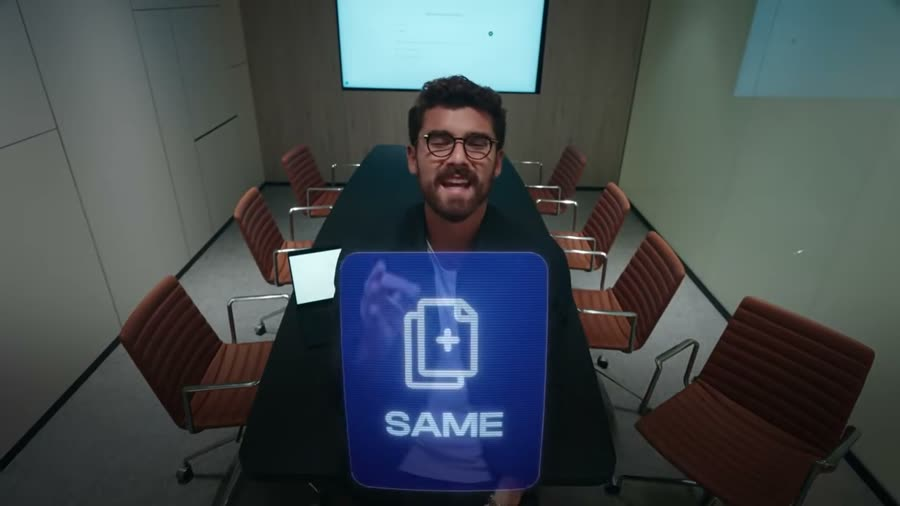
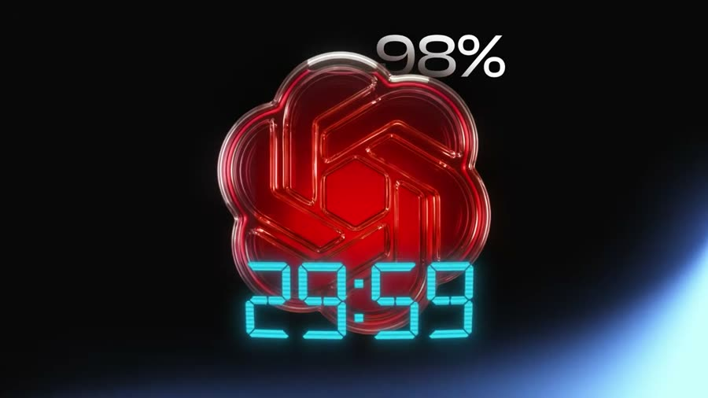
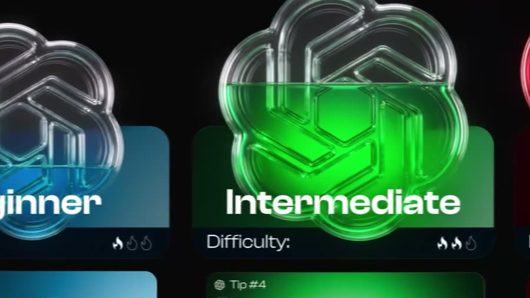
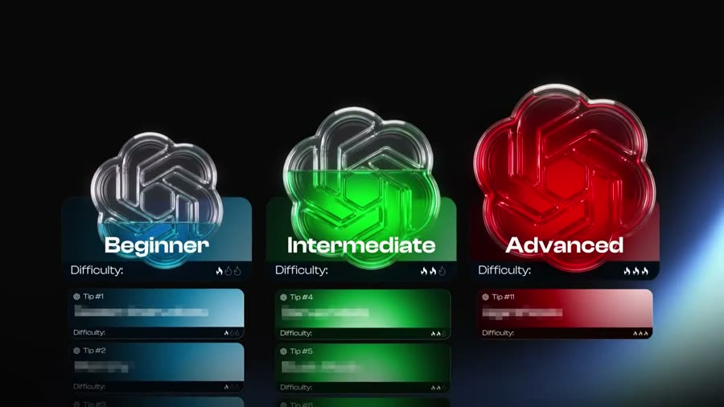

Разбор интро: Iman Gadzhi, «Дайте мне 28 минут — и я дам вам 10 000 часов знаний о ChatGPT»
Автор — Иман Гаджи, англоязычный блогер, который учит зарабатывать в интернете; у ролика
61 тысяча просмотров за два дня. ChatGPT в ролике — программа-собеседник: пишешь ей вопрос
текстом, она отвечает. Ролик обещает за полчаса научить пользоваться ею на полную.
Разбирается только интро — первый блок, где автор ещё ничему не учит, а удерживает зрителя.
Граница интро — 0:53. Совпали два признака. Первый: слово-переключатель — «So let's start
nice and easy» («начнём с простого») ровно после обещания «покажу приёмы трёх уровней».
Второй: смена времени глагола — до этого «я собираюсь показать», после этого «каждый раз,
когда вы открываете программу», то есть от обещаний к разбору. Третий признак — обрыв плотности
склеек — здесь не сработал: и до, и после границы одна склейка примерно на 4 секунды.
Ролик английский. Слева два слоя: оригинал мелкой строкой и дословный перевод.
Справа — сильный русский: тот же ход автора, пересказанный так, как он работал бы в посте.
Порядок ходов не тронут, добавлено ничего не было — только переформулировано.
Фрагмент — первые 62 секунды ролика. Таймкоды в разборе кликабельны: перематывают плеер.
2. Паспорт интро
0:53
длина интро
короче обычных 60–90 с
13
склеек
плотность держится и после границы
3,8 с
средний план
плотный монтаж
226
слов в минуту
у англоязычных ютуберов норма 180–200 — это разгон
200
слов всего
за 53 секунды
6
мыслей
законченных смысловых блока
0 с
пауза перед крючком
речь начинается с 0,2 секунды
Главное в цифрах: 226 слов в минуту при английской норме 180–200.
Автор тараторит намеренно — за 53 секунды он успевает шесть законченных мыслей.
Пауз длиннее полсекунды в интро нет ни одной: вырезаны все вдохи между фразами.
3. Цепочка ходов
Угроза скучной жизнью→Отсев: «закрой ролик»→Насмешка над тем, как пользуются другие→Диагноз цифрой: 2%→Снятие вины→Удар по кошельку: 100% цены за 2%→Обещание с точным сроком→Опись содержимого по уровням→Переключатель «начнём с простого»
Особенность цепочки — отсев стоит первым ходом, до всякого знакомства. Автор не
представляется вообще: ни имени, ни регалий, ни цифр про себя. Вместо авторитета работает
приём «этот ролик не для всех»: дважды подряд он предлагает зрителю уйти («можете закрыть
прямо сейчас», «платите дальше — ваше право»). Второй ход из редких — вина снята сразу
после диагноза: сначала «вы берёте два процента», через полторы секунды «вины вашей тут нет».
So look, if you're happy doing the same boring, repetitive tasks every day for the rest of your life, well, then you can click off right now because the next thirty minutes are for people who want out of that.
Слушайте, если вас устраивает делать одни и те же скучные, повторяющиеся задачи каждый день до конца жизни, что ж, тогда можете закрыть прямо сейчас, потому что следующие тридцать минут — для людей, которые хотят из этого выбраться.
40,0 слов в предложении · 40 слов / 1 предложение
Сильный русский
Каждый день одни и те же дела. Письма, таблицы, отчёты, ответы на одни и те же вопросы.
Завтра будет то же самое. И через год.
Если это устраивает — закройте ролик прямо сейчас.
Следующие тридцать минут для тех, кто хочет из этого выбраться.
7,0 слова в предложении · 42 слова / 6 предложений

0:02 — слово «SAME» («то же самое») вылетает плашкой поверх кадра. Скука названа не голосом, а картинкой.
0:08 — плашки размазаны движением: монтаж имитирует бесконечное повторение дней.
0:11 — 0:21Насмешка над обычным использованием180 слов/мин
Оригинал и дословный перевод
You see most people use ChatGPT to plan their groceries or to be their therapist after five hours of doom scrolling on TikTok, wondering why life is so tough.
Понимаете, большинство людей используют ChatGPT, чтобы спланировать покупку продуктов или чтобы он был их психотерапевтом после пяти часов бездумного пролистывания ленты в TikTok, пока они гадают, почему жизнь такая тяжёлая.
29,0 слов в предложении · 29 слов / 1 предложение
Сильный русский
Посмотрите, как этим пользуется большинство. Просят составить список продуктов на неделю.
Или жалуются на жизнь — вместо разговора с психологом. Обычно после пяти часов
в ленте коротких видео. И удивляются, почему всё так тяжело.
6,6 слова в предложении · 33 слова / 5 предложений
0:15 — рисованный человек лежит на диване с телефоном, в строке запроса «Plan my groceries for the week». Насмешка показана, а не сказана.
0:21 — 0:31Диагноз цифрой и снятие вины228 слов/мин
Оригинал и дословный перевод
And look, if that's you, I hate to say it, but you're probably only using about 2% of what it can actually do. And that's not your fault. I mean, this thing doesn't come with an instruction manual.
И слушайте, если это про вас, мне неприятно это говорить, но вы, скорее всего, используете лишь около 2% того, что оно на самом деле умеет. И это не ваша вина. То есть, эта штука не идёт с инструкцией.
12,7 слова в предложении · 38 слов / 3 предложения
Сильный русский
Если узнали себя — новость плохая. Вы берёте два процента того, что программа умеет.
Остальные девяносто восемь лежат нетронутыми. Вины вашей тут нет.
К ней не приложили инструкцию.
5,4 слова в предложении · 27 слов / 5 предложений
0:22 — счётчик в углу отматывает проценты вниз. Цифра появляется на экране раньше, чем звучит в речи.
0:28 — автор с ноутбуком, руки разведены. Единственный кадр с говорящей головой в этом блоке.
But this video probably isn't for you because today I'm going to show you how to learn 98% of ChatGPT in the next twenty to thirty minutes.
Но тогда это видео, скорее всего, не для вас, потому что сегодня я собираюсь показать вам, как выучить 98% ChatGPT за следующие двадцать-тридцать минут.
27,0 слов в предложении · 27 слов / 1 предложение
Сильный русский
Тогда этот ролик не для вас. Здесь про другое.
За двадцать-тридцать минут вы разберёте оставшиеся девяносто восемь процентов.
Один раз посмотреть — и знать всё нужное.
6,5 слова в предложении · 26 слов / 4 предложения
0:40 — счётчик докручен до 95%: цифра растёт в кадре, пока фраза ещё не закончена.

0:42 — «98%» и таймер 29:59 в одном кадре. Обещание и срок показаны вместе.
0:43 — 0:53Опись содержимого по уровням204 слова/мин
Оригинал и дословный перевод
I'm going to give you my favorite beginner, intermediate and advanced tips that will help save you time and get ahead of 99% of people who pay to use it the wrong way.
Я собираюсь дать вам мои любимые советы для начинающих, среднего уровня и продвинутых, которые помогут сэкономить время и обойти 99% людей, которые платят и используют это неправильно.
33,0 слова в предложении · 33 слова / 1 предложение
Сильный русский
Внутри — мои любимые приёмы. Три уровня сложности:
для начинающих;
для тех, кто уже освоился;
для продвинутых.
Все они экономят время. И ставят вас впереди девяноста девяти
человек из ста — тех, кто платит и пользуется неправильно.
8,0 слова в предложении · 32 слова / 4 предложения

0:45 — карточки «Beginner / Intermediate» выезжают одна за другой, ровно под перечисление голосом.

0:47 — три карточки встали рядом со шкалой сложности. Список из речи собран в схему.
So let's start nice and easy. You see every single time that you open up ChatGPT and you ask it something, you're literally talking to a stranger.
Итак, начнём с простого и лёгкого. Понимаете, каждый раз, когда вы открываете ChatGPT и о чём-то его спрашиваете, вы буквально разговариваете с незнакомцем.
—
Что изменилось
Обещания кончились, начался первый приём.
Дальше идут шаги: где найти настройку, что в неё вписать, что получится в ответ.
—
0:54 — новая обстановка, автор сидит под вывеской своей компании. Смена локации помечает переход к делу.
5. Пост — весь заход связным текстом
Вы платите за ChatGPT полную цену, а пользуетесь двумя процентами
Каждый день одни и те же дела. Письма, таблицы, отчёты, ответы на одни и те же вопросы.
Завтра будет то же самое. И через год.
Если это устраивает — закройте ролик прямо сейчас. Следующие тридцать минут для тех,
кто хочет из этого выбраться.
Посмотрите, как пользуется ChatGPT — программой, которая отвечает на вопросы текстом, —
большинство. Просят составить список продуктов на неделю. Или жалуются на жизнь — вместо
разговора с психологом. Обычно после пяти часов в ленте коротких видео. И удивляются,
почему всё так тяжело.
Если узнали себя — новость плохая. Вы берёте два процента того, что программа умеет.
Остальные девяносто восемь лежат нетронутыми. Вины вашей тут нет. К ней не приложили
инструкцию.
Подписка при этом списывается целиком. Полная цена каждый месяц. А работает у вас
два процента. Хотите платить так и дальше — платите.
Тогда этот ролик не для вас. Здесь про другое.
За двадцать-тридцать минут вы разберёте оставшиеся девяносто восемь процентов.
Один раз посмотреть — и знать всё нужное. Внутри — мои любимые приёмы. Три уровня сложности:
для начинающих;
для тех, кто уже освоился;
для продвинутых.
Все они экономят время. И ставят вас впереди девяноста девяти человек из ста — тех,
кто платит и пользуется неправильно.
Начнём с простого.
6. Тезисы пулями
Повторяющиеся дела занимают день целиком
Письма, таблицы, отчёты, одни и те же вопросы. Завтра будет то же самое.
Большинство просит у программы список продуктов и сочувствие
Два самых частых применения: покупки на неделю и жалобы на жизнь вместо разговора с психологом.
Используется два процента возможностей
Остальные девяносто восемь лежат нетронутыми у большинства платящих.
Инструкции к программе не прилагается
Поэтому вины пользователя тут нет — учиться не по чему.
Подписка списывается полностью независимо от того, сколько вы берёте
Полная цена каждый месяц за два процента работы.
Разобрать остальное можно за двадцать-тридцать минут
Приёмы трёх уровней: для начинающих, для освоившихся, для продвинутых.
Результат — время и отрыв от 99 человек из ста
От тех, кто платит и пользуется неправильно.
7. Что видно по картинке
Числа выведены на экран раньше, чем прозвучали. Счётчик процентов крутится
в углу кадра с 0:22 и докручивается до 98% к 0:42. Зритель считывает цифру глазами
и слышит подтверждение голосом — так она запоминается дважды.
Насмешка нарисована, а не сказана. На 0:15 рисованный человек лежит на диване
с телефоном, в строке запроса — «список продуктов на неделю». Узнавание себя происходит
по картинке, обвинения в речи при этом нет.
Цена показана деньгами. На 0:31 автор стоит между пачками купюр с надписью
«PRICE», на 0:34 рядом с ним круговая шкала с закрашенными двумя процентами.
Несоразмерность видна за секунду.
Перечисление собрано в схему. Три уровня сложности не просто названы голосом —
карточки выезжают одна за другой ровно под слова и остаются стоять рядом.
Смена локации помечает границу. Всё интро — переговорная с креслами,
с 0:54 автор сидит под вывеской своей компании. Переход к делу подкреплён сменой места.
Говорящая голова занимает меньше половины интро. Из тринадцати планов
шесть — рисованная графика и счётчики. Внимание держится картинкой, а не лицом.
8. Что заменено в русской версии и почему
«одни и те же скучные, повторяющиеся задачи» → «Письма, таблицы, отчёты,
ответы на одни и те же вопросы». Оценку «скучные» видеть нельзя, а письма и таблицы можно.
«до конца жизни» → «Завтра будет то же самое. И через год». Отвлечённый срок
заменён двумя точками во времени, которые читатель может представить.
«doom scrolling on TikTok» → «пять часов в ленте коротких видео». Жаргон
и название чужой программы убраны, действие описано.
«чтобы он был их психотерапевтом» → «жалуются на жизнь — вместо разговора
с психологом». Роль заменена действием.
«используете лишь около 2%» → «Вы берёте два процента. Остальные девяносто
восемь лежат нетронутыми». Та же цифра развёрнута со второй стороны — становится видно,
сколько теряется.
«платить 100% цены» → «Подписка списывается целиком. Полная цена каждый месяц».
Процент заменён действием, которое происходит с деньгами читателя.
«дело ваше» (be my guest) → «Хотите платить так и дальше — платите».
Английская идиома, которой нет в русском, заменена прямой фразой.
«советы для начинающих, среднего уровня и продвинутых» внутри фразы на 33 слова
→ три пули. Перечисление в середине длинного предложения не читается.
«обойти 99% людей» → «впереди девяноста девяти человек из ста». Процент
переведён в людей, которых можно пересчитать.
Средняя длина предложения упала во всех блоках: с 12,7–40,0 слов до 4,8–8,0.
По всему интро: 23,5 слова у автора против 6,4 в пересказе — почти вчетверо короче.
Объём содержания не срезан: 188 слов оригинала против 179 в русской версии.
Цепочка ходов не менялась — угроза, отсев, насмешка, диагноз, снятие вины, удар по кошельку,
обещание, опись содержимого остались на своих местах.